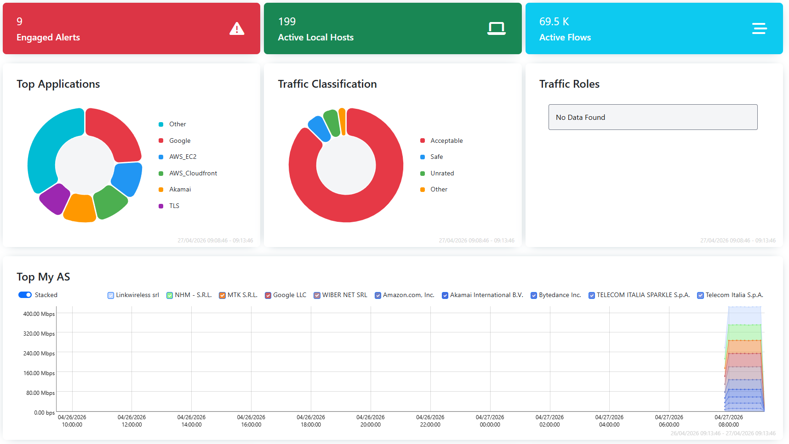
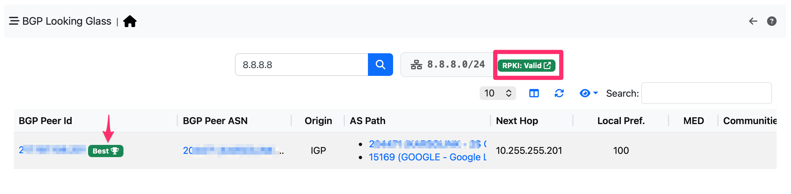

2. Использование режима AS
В режиме AS ваш GUI будет ориентирован на AS, что означает, что вы будете сосредоточены на AS, маршрутизаторах и сетевых интерфейсах, а не на IP-адресах.
2.1. Панель управления
На информационной панели ntopng теперь будет отображаться информация, относящаяся к автономным системам, например, «Лучшие AS», и информация об автономных системах, которую пользователь считает важной, например, «Лучшие пиринговые интерфейсы».

2.2. Страница АС

Список АС
На странице «Автономные системы» в меню «Интерфейс» можно просмотреть статистику трафика действующей/хостовой AS. Для каждой AS трафик представлен в зависимости от его роли (например, пиринг или транзит) и распределения (например, полученный или отправленный). Нажав на AS, можно увидеть разбивку трафика, разделенную по интерфейсам маршрутизатора (т. е. как трафик отправляется/получается для этой AS) и AS (т. е. какие AS отправляют/получают трафик от выбранной AS.
2.3. Потоки
Поскольку информация теперь сосредоточена вокруг автономных систем, можно будет просматривать не только автономные системы источника и назначения, но и транзитную AS.
Примечание
Информация о потоках перемещается в пункт меню «Вид» в режиме AS.

Открыв сведения о потоке, также можно будет увидеть транзит AS для каждого источника и пункта назначения.

2.4. BGP Информация
Информация о маршрутизации BGP, предоставленная сервером bgp_server (см. руководство пользователя nProbe). https://www.ntop.org/guides/nprobe/) сообщается несколькими способами:
Для собранных потоков информация BGP передается от nProbe до ntopng через ZMQ.

Вы можете запросить RIB (базу информации о маршрутизации), находящуюся внутри сервера bgp_, и просмотреть произвольные маршруты, включая проверку RPKI. Доступ к нему можно получить на левой боковой панели «Вид» -> «База информации о маршрутизации» и запросить RIB. О лучшем маршруте (согласно протоколу BGP) сообщается с помощью значка, и маршрут проверяется через RPKI.

BGP оповещения для отслеживаемых префиксов можно визуализировать на странице оповещений системного интерфейса на вкладке AS.